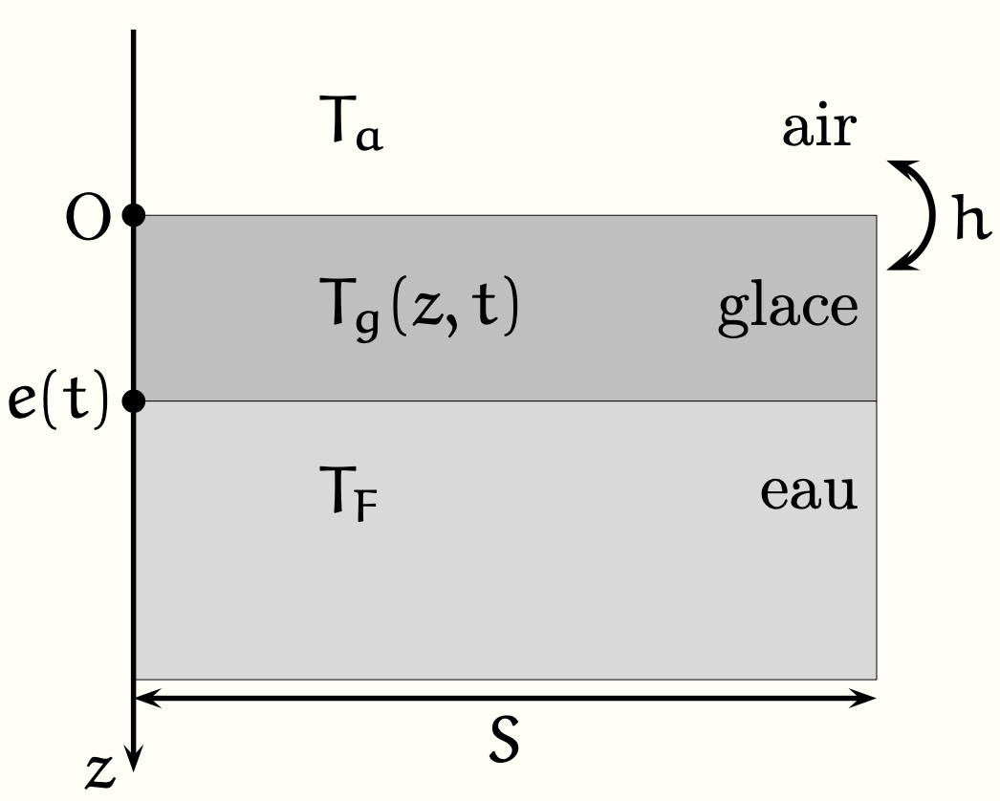

PrepOral
[MP] [Maison] [1]
Gel de la Seine
Enoncé
On modélise le problème de la formation d’une couche de glace sur la Seine comme décrit sur la figure
ci dessous. La surface d’un volume d’eau de la Seine initialement à la température de fusion $T_F$ est
mise en contact à l’instant $t = 0$ avec l’air à la température constante $T_a \lt T_F$. Une couche de
glace apparaît et se développe progressivement au sein du fluide. On note $e(t) $ la position de
l’interface entre l’eau et la glace. Soit $T_g(z,t)$ le champ de température dans la glace, supposé
unidimensionnel. On note h le coefficient conducto-convectif de l’interface air-glace et on se place
dans l’ARQS dans toute la suite.

On donne la conductivité thermique de la glace : $\lambda_g = 1 \; W.m^{-1}.K^{-1}$ ; la masse volumique de la glace : $\mu = 900 \; kg.m^{-3}$ ; l’enthalpie massique de fusion de l’eau : $L_f = 334 \; kJ.kg^{-1}$ et $h=40 \; W.m^{-2}.K^{-1}$.
1. Exprimer le flux thermique $\Phi(t)$ qui traverse la couche de glace à l’instant $t$ dans le sens $+\vec{u_z}$ en utilisant les résistances thermiques associées, on donnera une expression en fonction de $T_a$ , $T_F$ , $h$, $\lambda_g$, $S$ et $e(t)$.
2 Trouver une l'équation différentielle portant sur $e(t)$..
3 On avait coutume de dire : "Pour patiner à Paris, il faut 30° de froid", c’est à dire 5 jours à -6° ou 3 jours à -10°. Interpréter ce dicton.
Commentaires
Encore jamais posé !
Corrigé
\textbf{R.1} \[ R_c = \frac{1}{hS} \quad \text{et} \quad R_g = \frac{e(t)}{\lambda_g S}. \] Ces résistances en série donnent un flux : \[ \phi(t) = \frac{T_a - T_F}{R_c + R_g}. \] \textbf{R.2} \[ \delta m = \mu_g S \dot{e}\, dt. \] La variation de l’enthalpie au cours de la fusion du système constitué de l’eau qui, entre \(t\) et \(t+dt\), se transforme en glace, s’écrit : \[ dH = \delta m (H_s - H_l) = -L_f \delta m = \phi(t)\, dt \] soit \[ \phi(t) = -\mu_g L_f S \dot{e}(t). \] \textbf{R.3} En utilisant l’expression de \(\phi(t)\) on obtient : \[ \dot{e}\left(\frac{\lambda}{h} + e\right) = \frac{\lambda (T_F - T_a)}{L_f \mu_g}. \] En utilisant l’analyse dimensionnelle on pose \[ e_0 = \frac{\lambda}{h} \] (on peut remarquer que \(R_g/R_c = e(t)/e_0\) : \(e_0\) représente donc l’épaisseur à partir de laquelle la résistance thermique est dominée par la diffusion dans la couche de glace) et \[ D = \frac{\lambda (T_F - T_a)}{L_f \mu_g} \] homogène à un coefficient de diffusion. La résolution de l’EDO donne alors : \[ e(t) = \sqrt{2Dt + e_0^2} - e_0. \] \textbf{R.4} Pour \(\sqrt{2Dt} \gg e_0\), \[ e(t) \simeq \sqrt{2Dt}. \] Le processus limité par la diffusion dans la glace se ralentit au cours du temps et on remarque que l’épaisseur ne dépend que du produit \[ (T_f - T_a)t. \] Ce qui interprète le dicton !